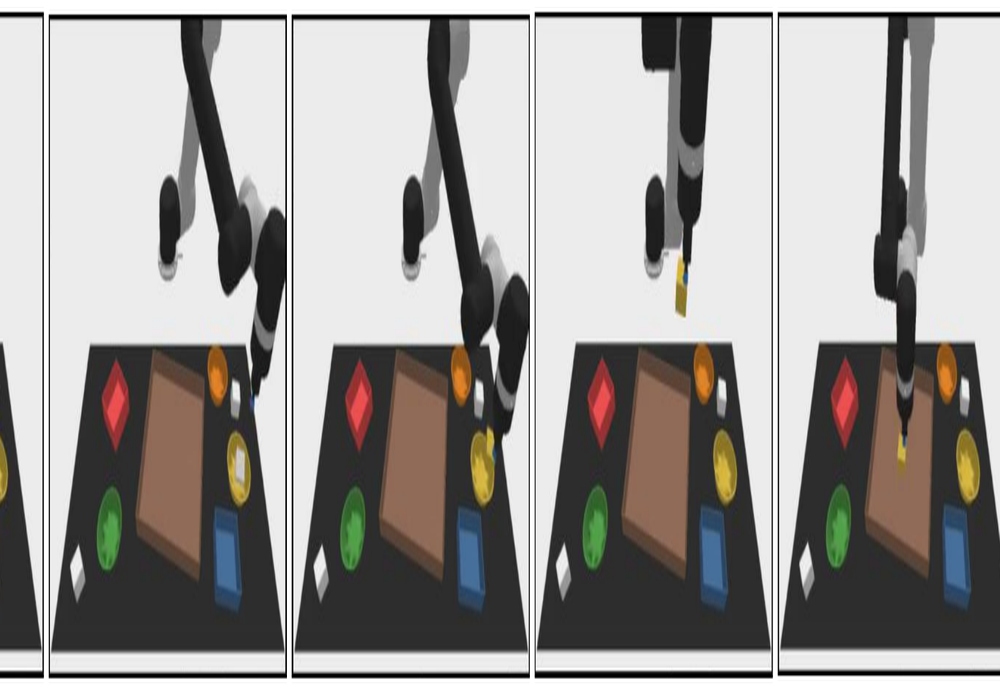
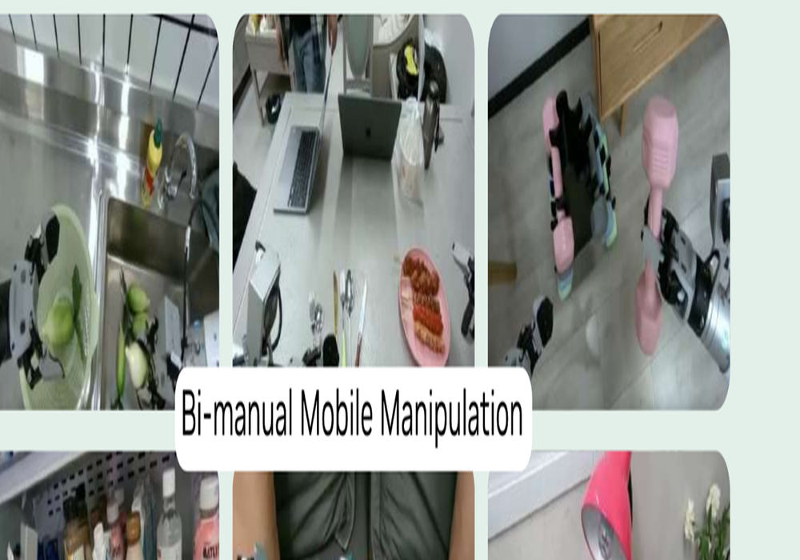
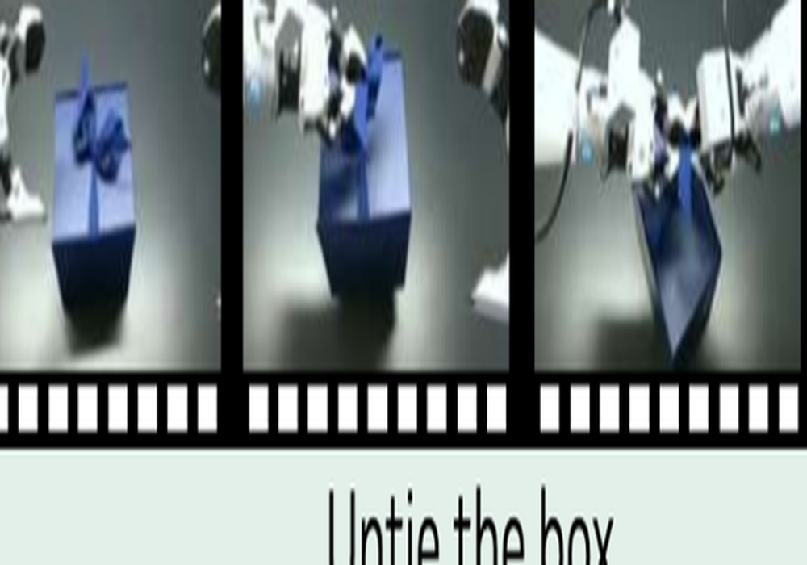
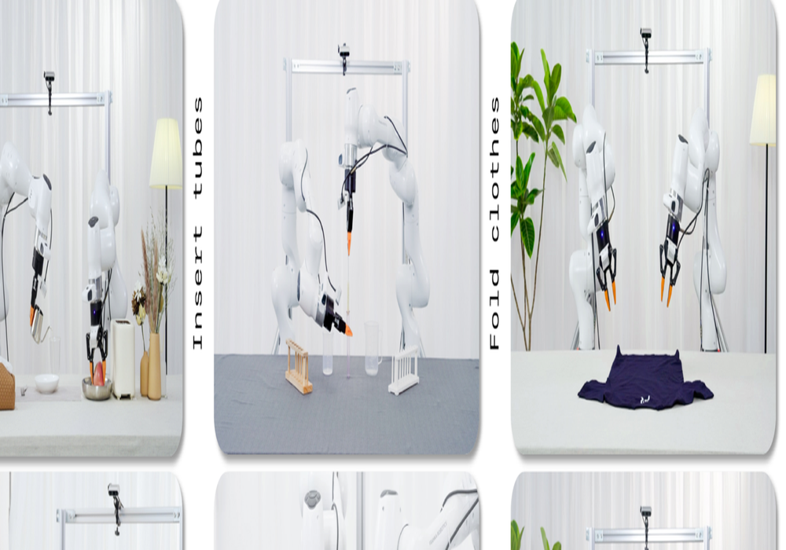
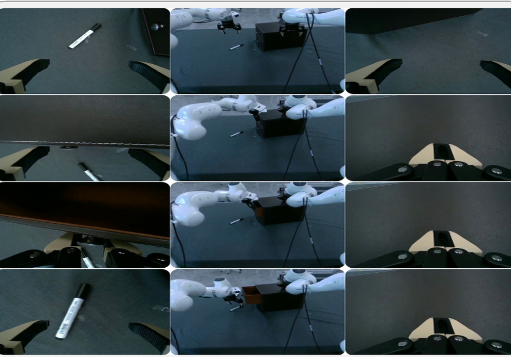

世界模型 · 第 4 期 · 2023 → 2026
World
Action Model
视频模型不只是画出未来，它同时把动作一起生成出来。从 UniPi 讲到 DreamZero 和 LingBot-VA。
可lip





01什么是 WAM · 口径取自 WM→WAM 教程与 DreamZero 附录 A
世界模型、VLA、世界动作模型
| | 输入 | 输出 | 你能问它 | 代表 |
|---|
| 世界模型 WM | 观测 + 动作 | 未来观测 | 「执行这个动作会怎样」 | Dreamer · Cosmos · Ctrl-World |
| VLA | 观测 + 指令 | 动作 | 「现在该怎么动」 | π0.5 · OpenVLA · GR00T |
| 世界动作模型 WAM | 观测 + 指令 | 未来观测 + 动作 | 「你打算怎么做」 | DreamZero · LingBot-VA · Cosmos Policy |
01什么是 WAM · 延迟数字来自各自论文
真正的区别：这笔账算在训练时还是测试时
世界模型：动作在条件里 — 部署时还得外挂一个搜索或规划
世界动作模型：动作在输出里 — 一次前向直接吐出来
V-JEPA 2 规划一步 16 秒 · Cosmos 一个动作 4 分钟 → DreamZero 150 毫秒
所以 WAM 不是一种新模型，是把「预测未来 → 选出动作」这一步，从测试时的搜索挪进了训练时的权重。
02这条线
七篇论文，三年
前四篇是铺垫，讲它们的想法；后三篇讲架构、训练、推理、数据、实验
2023-02
UniPi
文本生成一段视频
再翻译成动作
2025-04
UWM
两个 timestep
一套权重四种用法
2026-01
LingBot-VA
蚂蚁 · 因果自回归
持久记忆
2026-02
DreamZero
NVIDIA · 14B
零样本做未见动作
2026-07
VA 2.0
从零原生预训练
latent action + MoE
02这条线 · 自绘 · 蓝色是动作
动作从模型外面，一步一步走进了模型里面
03铺垫 · UniPi · NeurIPS 2023 · MIT + Google DeepMind · 论文图 2
先生成一段做完任务的视频，再把视频翻译成动作
03铺垫 · GR-1 · ICLR 2024 · ByteDance · 论文图 2
视频预测只当训练时的辅助损失，推理时砍掉
03铺垫 · VPP · ICML 2025 · 清华 IIIS · 论文图 3
连画面都不解码，只取去噪一步的中间特征
03铺垫 · UWM · RSS 2025 · 华盛顿大学 + 丰田研究院 · 论文图 2 · 左边训练，中间和右边是推理的两种用法
动作第一次进到模型里面
03铺垫 · UWM · 论文图 1 · timestep 就是「这个空填多满」
两个旋钮，同一套权重切出四种用法
03铺垫 · 小结
四条路，各自付了什么代价
| 论文 | 推理时的视频 | 动作怎么出来 | 留下的问题 |
|---|
| UniPi | 完整生成一整段 | 外挂一个 IDM 从帧里反推 | 分钟级、全开环，视频错了原样传下去 |
| GR-1 | 可以完全不生成 | 和视频并行的另一个头 | 未来不是计划，只是个正则项 |
| VPP | 去噪一步，不解码 | 策略头从特征里读 | 看不见它想象了什么，也不能问 what-if |
| UWM | 按 timestep 决定 | 和视频联合去噪 | 没有语言接口，规模也小 |
04DreamZero · arXiv 摘要里出现 "world action model" 的论文数 · 2026-09-06 抓取
「World Action Model」这个词，是DreamZero 起的
「我们用 World Action Model 而不是 Video Action Model —— 视频只是世界建模的一种方式，以后也可以是触觉、力反馈，或者学出来的隐表征。」
DreamZero 相关工作一节 · 原话翻译
04DreamZero · NVIDIA GEAR · 2026-02-17 · arXiv 2602.15922 · 论文图 1
14B 的视频模型，零样本做训练里没有的动作
04DreamZero · 自绘 · 对应论文式 1
联合分布 = 视频预测 × 逆动力学
04DreamZero · 论文图 4 · 骨干是 Wan2.1-I2V-14B，只新增状态、动作两个编码器和一个动作解码器
训练：一起加噪一起去噪 · 推理：真实画面回喂
04DreamZero · 论文图 14 · C = 条件帧，Z = 要预测的视频，Y = 要预测的动作
训练时喂真值，推理时 C 全部换成真实观测
04DreamZero · 自绘 · 作者称这是 WAM 独有的优势
纯视频生成治不好的毛病，闭环机器人白捡一个解药
04DreamZero · 自绘 · DROID 配置：视频 5 FPS、动作 15 Hz、H = 24
走一遍：指令是「把马克笔放进杯子」
04DreamZero · 自绘 · 第二轮：手偏右了两厘米
缓存里永远只有真实画面，想象永远被丢掉
04DreamZero · 论文表 1 · 单卡朴素实现是 5.7 秒一块
从 5.7 秒压到 150 毫秒
| 做了什么 | H100 × 2 | GB200 × 2 | 这一层解决的问题 |
|---|
| 朴素实现 | 1× | 1.1× | 16 步去噪 · 14B · 串行执行 |
| CFG 并行 | 1.9× | 1.8× | 条件和无条件分两张卡，单步 −47% |
| DiT caching | 5.5× | 5.4× | 相邻速度差不多就复用，16 步 → 4 步 |
| 编译 + CUDA Graphs | 8.9× | 10.9× | 去掉 Python 调度开销 |
| cuDNN 注意力 + 调度上卡 | 9.6× | 14.8× | 算子和调度器都搬到 GPU |
| NVFP4 量化 | — | 16.6× | Blackwell 独有 |
| DreamZero-Flash | — | 38× | 去噪从 4 步压到 1 步 · 7 Hz |
04DreamZero · 论文图 15 · 收桌任务：4 步 83% · 1 步 52% · Flash 1 步 74%
训练时把视频推到高噪声那一端，动作照样去噪到干净
04DreamZero · 论文图 6 · 左：每段多长 · 右：每段几个子任务
500 小时，平均一段4.4 分钟、42 个子任务
04DreamZero · 自绘 · 采集流程见论文附录 F
长尾不是设计出来的，是机制长出来的
04DreamZero · 论文图 7 · 纵轴对数坐标 · 操作 12.5 万 · 导航 6.6 万 · 转向 5.8 万 · 躯干升降 4.6 万
头部是搬和放，尾巴上很多技能只有十几个样本
04DreamZero · 论文图 8 · 评测点和采集点不在同一个城市：未见环境 + 未见物体 · 80 次 rollout
同样的数据，从零训的 VLA 接近 0
04DreamZero · 论文图 9 · 指标是任务进度，不是成功率
解鞋带、握手、熨衣服 —— 训练里一次都没有
04DreamZero · 论文表 4 · PnP-Easy · 5 万步 batch 32 · 标准误 4–6%
放大模型救不了 VLA，因为这是范式问题
| 对照 | 左 | 右 | 说明 |
|---|
| 数据：重复 vs 多样 | 33% | 50% | 同样是 500 小时 |
| 规模：DreamZero 5B vs 14B | 21% | 50% | 小模型的视觉幻觉会传到动作上 |
| 范式：VLA 5B vs 14B | 0% | 0% | 放大到 32B 初始化仍然是 0 |
| 架构：双向 vs 自回归 | 50% | 50% | 进度一样，但自回归快 3–4 倍 |
04DreamZero · 论文表 2 · 9 个未见任务 · 作者自己称这是 early signal
12 分钟人类第一视角视频，值 16 个点
54.3%
+ 12 分钟人类第一视角视频
72 段，1:1 混合继续训 1 万步
55.4%
+ 20 分钟另一台机器人的视频
同样只有 72 段
这些数据只用视频损失，一个动作标签都没有 —— 而人类视频比机器人数据多好几个数量级
04DreamZero · 论文图 5 · 上排是真机执行，下排是模型同时生成的画面
失败几乎都是想象错了，机器人忠实地执行了它
05LingBot-VA · 蚂蚁 Robbyant · 2026-01-29 · arXiv 2601.21998 · 论文图 2
一条序列：视频一帧、动作四个，交替往下写
05LingBot-VA · 自绘 · 维度取自论文 3.3 节
在一个房间里开会，开完各回各的办公室
05LingBot-VA · 论文图 3 · 黄 = 视频，绿 = 动作，带 (s) 的是要预测的加噪目标
块内双向并行，块与块之间严格因果
05LingBot-VA · 论文图 4 · A / B 是时间轴，B-1 / B-2 是同一时刻 KV cache 里有什么
异步的代价：当下的真实画面还不存在
05LingBot-VA · 论文表 3 · RoboTwin 2.0 Easy
填进去的那一帧从哪算来的，差52 个点
| 方案 | 缓存里的画面来自 | 全部任务 | 长程任务 |
|---|
| 同步 · 机器人干等 | 只有真实观测 | 92.9 | — |
| 朴素异步 | 上一轮的陈旧预测 | 74.3 | 32.9 |
| 前向动力学接地的异步 | 用最新真观测当场重算 | 90.4 | 85.6 |
05LingBot-VA · 论文图 9 · KV cache 存的是整条历史，不是最近几帧
擦盘子必须正好六下：100% 对 47%
05LingBot-VA · 和 DreamZero 对着看
一个往数据质量走，一个往数据规模走
| | DreamZero | LingBot-VA |
|---|
| 数据 | 自采 500 小时 | 聚合六个公开源 + 内部，约 16,000 小时 |
| 本体 | 两种本体分开预训练 | 统一成 30 维动作，跨本体一起训 |
| 动作表示 | 相对关节位置 | 绝对末端位姿 —— 所以动作历史就是本体轨迹，能喂给视频预测 |
| 记忆 | 6.6 秒 | KV cache 存整条历史 |
| 主场 | 真机零样本做未见动作 | benchmark 屠榜 · 50 条演示换新平台 · RoboTwin 92.9 / LIBERO 98.5 |
| 推理显存 | 45 GB 起，要 7 Hz 得两块 GB200 | 约 24 GB，单张 4090 能跑 |
06VA 2.0 · LingBot-VA 2.0 · 2026-07-09 · arXiv 2607.08639 · 论文图 2
不再改装视频模型，从零原生预训练
06VA 2.0 · 论文图 3 · 左边蓝色是视觉 tokenizer，右边绿色是 latent action · 这就是架构图里那个 SemVAE
让没有标注的网络视频，也带上动作监督
06VA 2.0 · 论文图 4 · FM Loss = flow matching · 蓝色那三块是训练时的辅助监督，推理时可拆可留
只监督下一块，模型会抄外观
06VA 2.0 · 论文图 5 · planner 输出是固定四个字段的 JSON
planner 在后台跑 2 Hz，和执行回路异步解耦
06VA 2.0 · 论文 Data Recipe 一节 · 自绘 · 三阶段课程 → 具身那一阶段有什么 → 三个特点
人手的 22 个关节，压成一个夹爪开合度
06VA 2.0 · 论文图 6 · 内部真机 benchmark · 蓝 = VA 2.0，米 = VA 1.0，绿 = π0.5 · 左成功率，右进度分
一个 checkpoint 跑四个任务，每个只给20 条演示
06VA 2.0 · 三家没有公共榜单，下面按维度对齐，不是同一场比赛
设计上是第一梯队，证据上还不是
| | DreamZero | LingBot-VA 2.0 | Cosmos 3 |
|---|
| 规模 | 14B 稠密 | 15.3B 总 / 2.5B 激活 | 16B / 64B |
| latent action | 没有 | 有 | 没有 |
| 分层 planner | 没有 | 有，2 Hz | 没有 |
| 能问 what-if | 不能（共享 timestep） | 不能（前向动力学只内部用） | 能 |
| 第三方榜单 | 曾经双榜第一 | 从没上过 | 双榜第一 |
| 零样本证据 | 10 个未见动词 · 80 次 rollout | 4 个内部真机任务 | RoboLab 120 个任务 |
| 开源 | 代码 + 权重 | 什么都没有 | 权重 + 数据 |
07悬案 · Fast-WAM · 2026-03 · 同骨干同配方的受控消融
值钱的是训练时那个目标，推理时想不想象几乎不重要
| 变体 | RoboTwin | LIBERO | 延迟 |
|---|
| 推理时完全不想象 | 91.8 | 97.6 | 190 ms |
| 联合去噪（DreamZero 那样） | 90.6 | 98.5 | 580 ms |
| 先生成视频再反推（UniPi 那样） | 91.3 | 98.0 | 810 ms |
| 去掉训练时的视频目标 | 83.8 | 93.5 | 190 ms |
07悬案 · VPP 论文图 5 · 上排完整去噪 30 步，下排只去噪 1 步
控制需要的是往哪动，不是长什么样
07悬案 · 三条互不相干的技术路线
三条不同的路，撞上同一个结论
VPP：只取去噪一步的中间特征，画面糊得看不清 — 140 毫秒
DreamZero-Flash：训练时就让视频停在 80% 噪声 — 150 毫秒
LingBot-VA：视频只去噪到一半就拿去出动作 — 步数减半
代价是：那段你想截下来给 VLM 看一眼的「未来」，本身就是模糊的。想看清楚，就得付完整去噪的延迟。
08局限
作者说的 · 我读出来的
论文里写了的
WAM 还没有 scaling law，人类视频只试了 12 分钟
7 Hz 要两块 GB200，比消费级卡上 20 Hz 的 VLA 贵得多
只是 System 1：视觉记忆 6.6 秒，长程任务还需要一个规划器
亚厘米精度的插孔、装配，模仿学习本身就做不了
我读出来的
指标是任务进度不是成功率：DROID 上进度 49% 对应成功率只有 22.5%
核心数据集没开源，「多样 50% vs 重复 33%」这个对照没法独立验证
模型没有任何机制知道自己画错了，执行完全信任想象
两篇都只是「说」自己对：DreamZero 只测零样本，Fast-WAM 只测分布内
World Action Model
想象在一个动作块之内是动作的来源，在块与块之间被现实取代；
而它最大的价值，其实在训练的时候就已经兑现了。
可lip